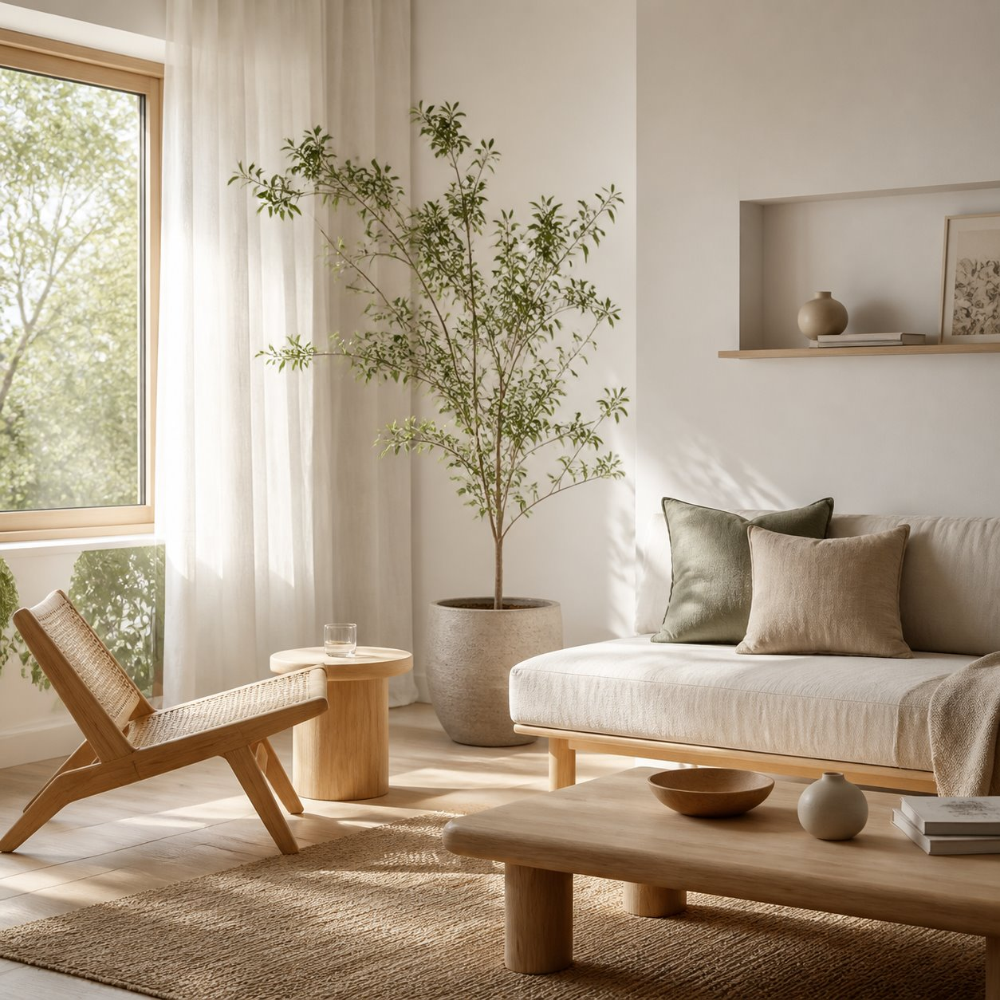
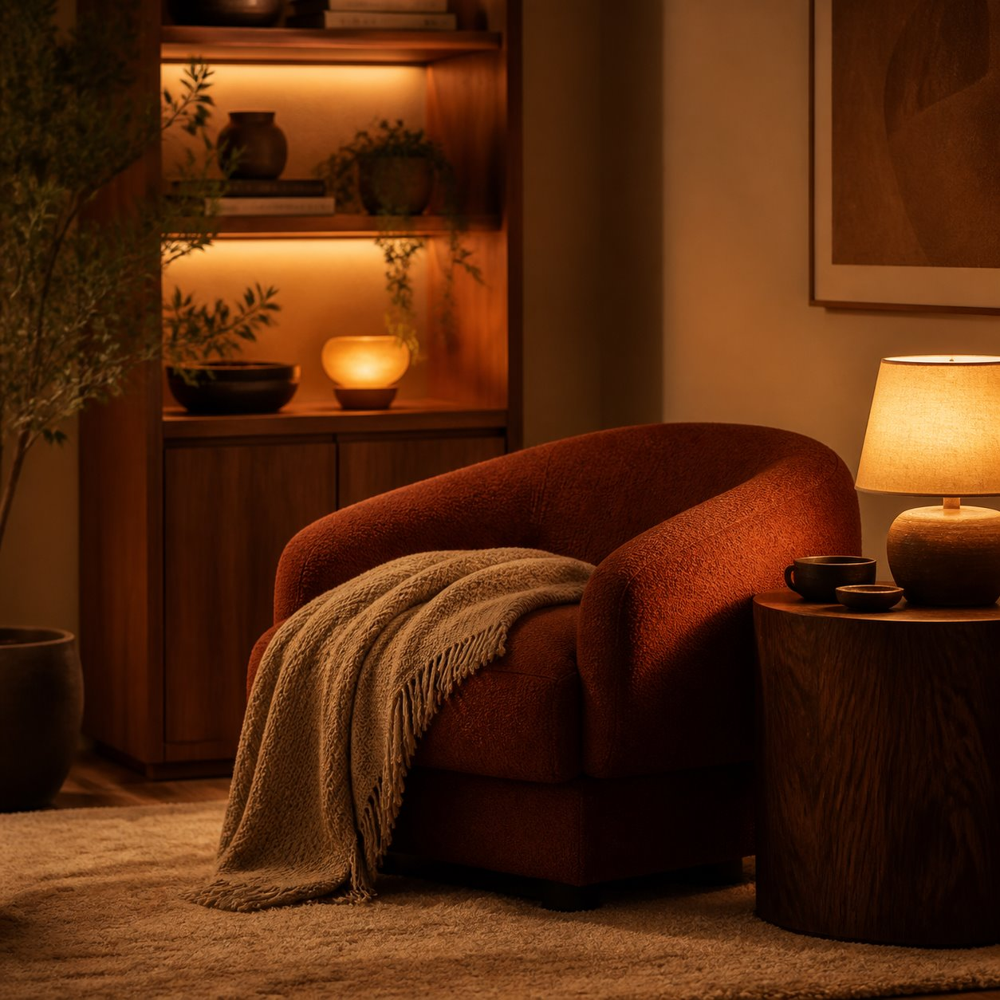
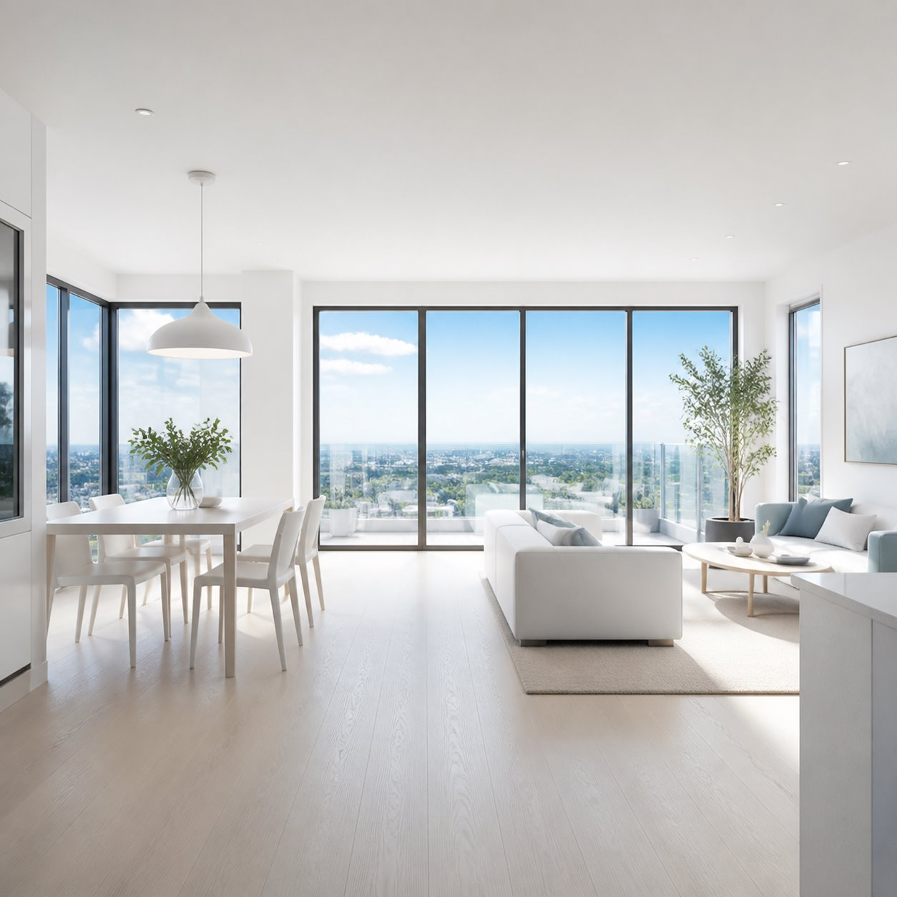

把客户模糊的表达，整理成设计师能判断的信息。
Shike 是一个用于室内设计前期沟通的轻量工具，帮助设计师在项目开始前看清生活习惯、空间偏好、审美参考与沟通重点。
当前面向独立设计师和小型工作室小范围试用；示例问卷不保存真实项目数据。



偏好温暖克制；重点关注厨房动线、公共区收纳和“不要太冷”的视觉边界。
让客户先看见感觉，再描述需求。
很多空间偏好很难靠文字说清。用图片、场景和生活问题一起收集，能更早看出客户真正关心的东西。
它解决的是前期沟通里的信息混乱。
Shike 不试图替代设计师判断，而是把客户分散在聊天、图片和口头表达里的信号，提前整理成更容易讨论的材料。
图片参考比风格名称更有效
很多客户并不能准确描述自己的审美，但通常能快速判断“像不像自己想要的感觉”。
居住习惯比风格更重要
做饭频率、收纳方式、作息习惯与家庭关系，往往比风格本身更影响空间布局。
提交后生成需求摘要
客户填写完成后，系统会整理生活习惯、审美偏好、空间重点与沟通注意事项，方便设计师快速进入项目判断。
Shike 重点不是多问几题，而是把回答翻译成设计判断。
客户常说的是感受，设计师需要判断的是空间策略。这个工具把两者之间的那一步提前整理出来。
客户表达
“想要温馨一点，但不要太乱，也不想看起来像样板间。”
系统整理
偏好温暖克制的氛围，重视收纳、材质触感和公共区的放松感。
设计沟通
下一次沟通优先确认生活动线、常用物品数量和对“温暖”的视觉边界。
两套问卷，对应不同深度的设计沟通。
真实项目里，客户不一定一开始就愿意填写很长的表。Shike 更适合用轻量版先建立判断，再在项目启动前进入完整版。
快速摸底
收集户型、面积、预算、家庭成员、风格倾向和主要痛点，适合初次沟通或微信转发。
完整需求调研
覆盖家庭结构、客餐厅、厨房、卫生间、卧室、服务预期等模块，适合方案启动前。
摘要整理
把客户回答整理为需求摘要、画像标签、空间偏好和沟通建议，而不是只留下原始答案。
一个更安静的设计沟通流程。
先把需求整理清楚，再进入设计判断。
发送问卷
在正式沟通前，通过轻量链接收集基础信息与空间习惯。
整理偏好
通过图片与问题收集客户的审美倾向与生活方式。
生成摘要
提交后生成一份设计师视角的需求摘要，帮助回看重点信息。
开始设计
减少重复沟通，让前期方向从一开始就更接近真实需求。
给设计师一个更清楚的项目开始方式。
Shike 适合在初次沟通、签约前调研和方案启动前使用。现在先小范围开放试用，真实项目数据只进入对应设计师的工作流。
适合小范围、可信任地使用。
Shike 是一个用于室内设计前期沟通的需求整理工具。它不是替代设计师判断，而是帮助把客户的生活习惯、空间偏好、审美参考和项目预期提前整理出来。
很多项目前期信息会散落在微信聊天、语音、图片和临时笔记里。Shike 试图让这些信息在开始设计前变得更清晰、更容易回看。
大部分客户其实并不知道自己真正喜欢什么。好的需求调研系统，能在设计开始前，把生活习惯与空间偏好提前显现出来。
示例问卷
这是一个只用于展示体验的示例页面，不连接真实项目，也不会写入真实后台。
需求摘要
以下为示例问卷生成的整理结果，用于展示产品形态，不连接真实项目数据。
需求摘要
客户希望家呈现安静、温暖、易放松的状态。当前最关注收纳、厨房动线和公共区域的采光感，希望空间整洁但不要显得冷淡。审美判断更依赖图片氛围，而不是固定风格名称。
客户画像标签
空间偏好
沟通建议
- 先用图片确认“温暖但不厚重”的边界，避免直接进入风格标签争论。
- 重点追问厨房使用频率、采购方式和常用小电器数量。
- 在平面方案阶段优先解释收纳逻辑和动线取舍。
关于 Shike
Shike 是一组围绕设计沟通、需求整理和项目记录的小工具。
使用方式
设计师在项目开始前发送问卷链接，客户在手机上填写生活习惯、空间偏好、审美参考与项目预期。设计师再根据这些记录进行前期判断。
它适合谁
适合独立设计师、小型设计工作室，以及希望把前期沟通流程标准化的团队。
它不是什么
它不是替代设计师判断的系统，也不是公开客户信息的平台。它只是帮助把早期沟通信息整理得更清楚，并在需要时辅助生成设计师视角的需求摘要。
隐私说明
通过 Shike 收集的信息，仅用于需求整理、项目沟通和设计前期判断。
- 不公开展示客户提交内容。
- 不出售客户数据。
- 不建议提交身份证、银行卡、密码等敏感信息。
- 如需删除或更正信息，可以通过 contact@shike.app 联系。
使用条款
Shike 按现状提供，用于辅助设计前期沟通与需求整理。
- 使用者应自行确认提交内容的准确性。
- 请勿提交身份证、银行卡、密码等敏感信息。
- 示例页面仅用于展示，不代表真实项目数据。
- 如有问题，请联系 contact@shike.app。